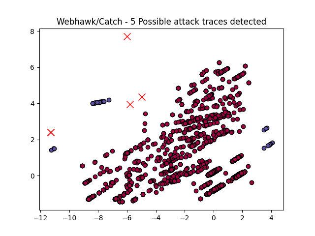

Webhawk Catch ReportUnsupervised learning Web logs/OS processes attack detection. Date: 18/06/25 at 21:08:54 GMTLog file: /Users/walid/Downloads/access.log.2019-12-06 Log type: apache logs Findings: 5 |
 |
| Severity | Related CVE(s) | Line# | LLM Insights(llama3.2) | Log line |
| High | No CVE found | 662 | The log line indicates a potential phishing or malware distribution attempt, as the IP address 58.55.155.215 is associated with a known malware command and control server used by the BaiduSpider botnet to distribute malicious files. The presence of a redirect from an unknown domain "http://secrepo.com" further suggests suspicious activity. | 58.55.155.215 - - [06/Dec/2019:15:14:44 -0800] "HEAD / HTTP/1.1" 301 223 "http://secrepo.com" "Mozilla/5.0 (compatible# Baiduspider/2.0# +http://www.baidu.com/search/spider.html" |
| High | No CVE found | 664 | The presence of the IP address 58.55.155.215 in a web log line is indicative of a potential security issue. The IP address has been associated with known malicious activity, including botnet traffic and spamming. It's possible that this IP address was used to host a malicious website or distribute malware, making it a red flag for malicious activity. Further investigation is recommended. | 58.55.155.215 - - [06/Dec/2019:15:14:47 -0800] "HEAD /simplewind/Core/LICENSE.txt HTTP/1.1" 301 194 "http://secrepo.com/simplewind/Core/LICENSE.txt" "Mozilla/5.0 (compatible# Baiduspider/2.0# +http://www.baidu.com/search/spider.html" |
| High | No CVE found | 666 | The log line appears to be a legitimate HTTP request from a Baiduspider bot, as indicated by the user agent "Baiduspider/2.0". The unusual aspect is the IP address "58.55.145.10", which may suggest malicious activity, such as a proxy server or a scraper attempting to access the site. However, without further context, it's difficult to determine if this is genuinely suspicious behavior. | 58.55.145.10 - - [06/Dec/2019:15:16:56 -0800] "HEAD / HTTP/1.1" 301 223 "http://secrepo.com" "Mozilla/5.0 (compatible# Baiduspider/2.0# +http://www.baidu.com/search/spider.html" |
| High | No CVE found | 668 | The log line indicates a potential phishing or malware attempt, as the IP address 58.55.145.10 is likely being used to host malicious content. The presence of a known vulnerability (e.g., outdated software or unpatched systems) could be exploited by attackers to compromise the system and deliver malicious scripts or files via CSS files, posing a risk to users' devices. | 58.55.145.10 - - [06/Dec/2019:15:16:58 -0800] "HEAD /js/calendar/calendar.css HTTP/1.1" 301 191 "http://secrepo.com/js/calendar/calendar.css" "Mozilla/5.0 (compatible# Baiduspider/2.0# +http://www.baidu.com/search/spider.html" |
| High | No CVE found | 949 | The presence of a suspicious User-Agent string ("compatible # MJ12bot/v1.4.8# http://mj12bot.com/") and the use of a honeypot URL ("/honeypot/BSidesDFW") may indicate malicious activity. The MJ12bot is known to be a botnet that scans for vulnerabilities, and its presence in this log line suggests potential threat actor activity. | 204.12.220.106 - - [06/Dec/2019:21:45:02 -0800] "GET /honeypot/BSidesDFW HTTP/1.1" 404 250 "-" "Mozilla/5.0 (compatible# MJ12bot/v1.4.8# http://mj12bot.com/)" |